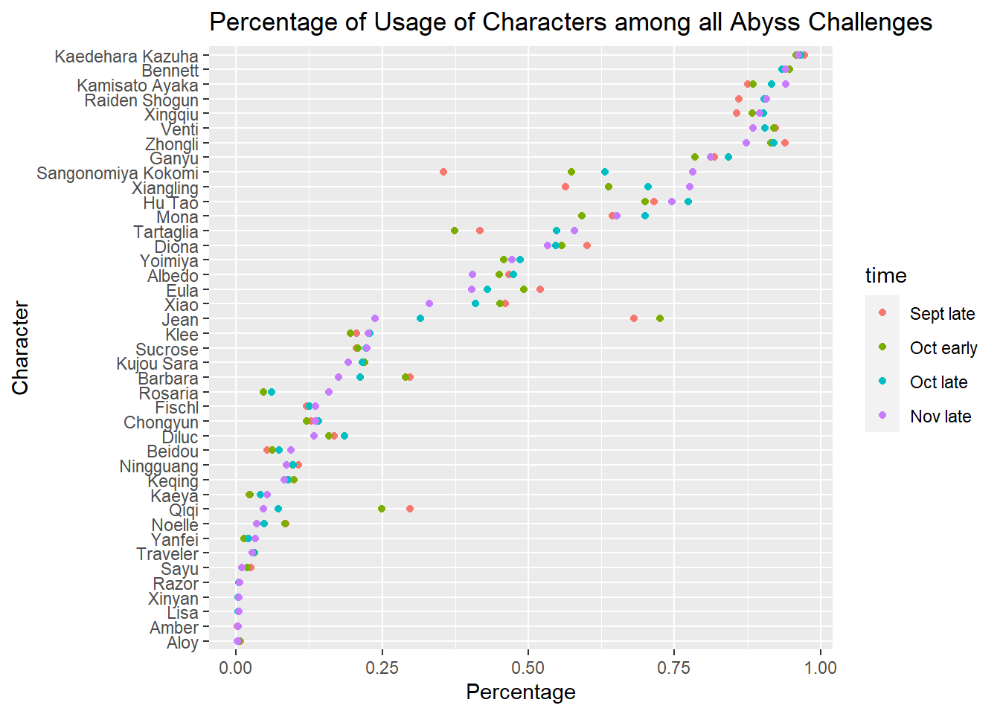

Chapter 5 Results
The above Cleveland Dot Plot illustrates the percentage of appearance in the Abyss for each character. Also, the color illustrates how the rates change from Late September to Early November. From the plot, we can observe that popular characters such as Bennett, Xingqiu and Raiden Shogun (at the top of the plot) have been keeping high appearance rates, while characters like Aloy, Amber and Xinyan (at the bottom of the plot) are generally rare in the Abyss mode. The percentages for each character are unlikely to change by much from month to month, but there are some exceptions like Xiangling whose appearance percentages keep increasing from Late September to Early November.

The above Cleveland Dot Plot illustrates the usage rate for all characters. The usage rate is defined as:
\(usage \ rate = \frac{number\ of\ players\ using\ this\ character}{number\ of\ players\ owning\ this\ character}\)
The usage rate metric differ from appearance rate metric as it takes players inventory into account. Due to the loot-box mechanism of the game, many players don’t have certain character, and that is not reflected on the appearance rate metric. By using usage rate, we debias the data in the way that even a character that fewer people own can have high usage rate. The most significant example is Kaedehara Kazuha. His appearance rate is only around 50%, possibly because he is a five-star character that not many people own, yet his usage rate is about an astounding 97%, indicating that people owning him would be almost certain to use him to clear Abyss. Therefore, by the definition of usage rate, we can conclude that higher usage rate means higher power level, as players would more likely to use these characters instead of those with lower usage rate.
We can also observe that majority of characters have a steady usage rate that does not vary much from month to month, yet there are exceptions as well. Sangonomiya Kokomi seems to gain huge increase in usage rate from September late to November early, which usually indicates thatr players invent more advanced and efficient technique to use this character. In such case, drawing this character seems to be reasonable given his/her improvement in usage rate.
This graph illustrates the average percentage of usage for all characters across 4 sessions of Abyss, with additional information provided on character’s metadata like ranking and element type. This is where things get a little bit interesting as we are now viewing from a different angle.
The first thing to notice is that among characters with high average usage rate, the majority of them are 5-star characters, or ranking of 5. This however, reflects the worthiness of a few 4-star characters in that region, namely Bennett, Xingqiu, Xiangling, and Diona. These 4-star characters shine in the area of average usage rate > 50%. Since 4-star characters require much less in-game currency to acquire, players should focus on getting these “cheap” 4-star characters as soon as possible. On the other hand, the majority of 4-star characters aggragate at very low usage region <10%.
The other insight derived from this graph is relation between element type and usage rate. The anemo and cyro elements seem to dominate the high usage rate region > 75%. Electro characters generally have an extremely low usage rate with the exception of Raiden Shogun. Hydro characters, while they are not in the top region, are actually performing quite well in the middle region 25% < usage rate < 75%. Geo characters suffer from the same problem as elecetro ones, they generally have low usage rate with the exception of Zhongli. Pyro characters have the most number of 5-star, yet most of them have mediocre usage rate, which indicates that it may not worth to draw a 5-star pyro character.
We can see from the density curve that majority of 4-star characters do not have high usage rate, while 5-star characters have a steady distribution. That actually gives a clear estimation of 4-star character worthiness: it is highly likely that a new 4-star character would not help player clear Abyss. For a 5-star character, however, things get complicated. The distribution is quite flat, meaning we have no idea whether next 5-star character worth drawin.
This is a scatter plot of Percentage of Appearance versus Average Constellation of each character. Since Constellation costs resources, Average Constellation can indicate how many resources players spend on enhancing each character on average. We can observe that game characters are generally located at the four corners, which means that they can be divided into 4 categories. Bottom left corner are characters who players are not likely to spend resources in enhancing them and do not often appear in the Abyss. Bottom right corner are characters who players would generally spend resources in enhancing them but do not often use them in the Abyss. Top left corner are characters who many players use them in the Abyss without spending excessive resources on them (so they are “strong”). Top right corner are characters who appear frequently in the Abyss but players have spent many resources enhancing them.

In this parallel coordinate plot on percentage of appearance in the Abyss, average constellation and average friendship, each character is represented by a line. There is a trend that characters with high percentage of appearance and low average constellation have high average friendship. This means that players generally like those characters (indicated by high friendship) who are strong enough to appear frequently in the Abyss without requiring too many resources (indicated by low constellation).
This boxplot shows the distribution of character levels for each character. We can observe that more than 50% of players have levelled up characters like Zhongli, Xiao, Raiden Shogun and Kamisato Ayaka to the maximum level. Notice that those characters at the top are generally characters with high Abyss Appearance Rate as indicated by previous graphs. On the other hand, most players do not level up Lisa, Amber, Xinyan and Aloy very much. Notice that they are the ones who players are not likely to use in the Abyss.